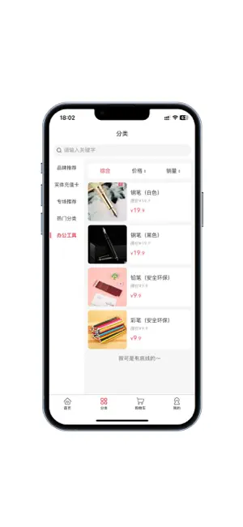
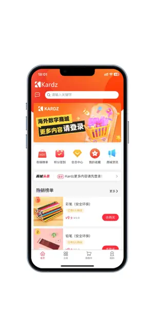

我用过三款游戏充值平台，最后留在手机里的是 Kardz
从 Steam 充值到直播打赏，第三方充值平台这个赛道鱼龙混杂。对比过几家主流方案，Kardz 在几个细节上做得特别对，但也有它绕不开的短板。这篇把它放进同类里聊聊，帮你判断要不要留。
游戏充值这个事儿，表面上看选项很多，实际能用的第三方平台就那么几家。大厂方案要么覆盖范围窄（只管自家生态），要么价格跟游戏内购差不了多少；小众平台倒是灵活，但稳定性和售后一直是心病。我从Kardz官网第一次接触到它，断断续续用了快一年，中间也换过其他两家，到最后手机上只剩它了——不是因为它完美，是因为它在"够用"这件事上踩对了几个关键点。
同类软件格局：它排哪儿
先给没接触过这类产品的朋友一个坐标系。第三方游戏充值平台大致分三档：
第一档是游戏厂商自己运营的官方代充渠道，安全有保障但可选游戏少，基本只覆盖头部大作；第二档是聚合类平台，把各家游戏和直播渠道打包在一起做一站式服务，Kardz 就属于这一档；第三档是个人卖家或小工作室，价格可能最低但完全没售后，出了问题只能认倒霉。
我对比过两家同档的聚合平台，说实话功能上差异没有想象中大——游戏覆盖数、充值方式、客服响应这些基础指标，大家都不差。真正拉开差距的是那些我后来翻了Kardz文档才注意到的细活，以及出了问题之后平台的态度。

它的差异化：三个别家没做好的点
直冲的防踩坑做得特别细
从下载拿到之后我第一件事就是测直冲——这是所有充值方式里最容易出事的，UID 填错、区服选混、充完一直卡"处理中"，这些坑我在别的平台上真的都踩过。Kardz 在直冲这块做了几件让我印象深刻的小事。
比如 UID 输入框旁边直接挂了一个简短的校验提示：国际服和国内服 UID 开头不一样，平台会在你输完后自动比对格式，明显不对的直接弹红框拦住。不是那种事后退款的补救，是在你付款前就把最常见的错误堵上了。还有区服选择，别家是下拉菜单给你选，Kardz 是在商品标题里直接把区服标签打在最前面，亚服、欧服、台服一眼就能看见，不会选混。
最让我觉得贴心的是那个"订单处理中但游戏已到账"的提示——90% 的情况是网络回调慢，游戏里其实已经到了。别的平台只会让你刷新等，Kardz 直接在订单页写了这句话，我第一次看见的时候差点笑出声，因为这正是我之前被坑过好几次的地方。
直播充值到账速度明显更快
我经常给几个主播打赏，直播充值这块两家对比下来，Kardz 的到账速度确实快。抖音和快手基本付款后两三分钟就能在钱包里看到余额增加，虎牙稍慢但也在五分钟内。
这背后其实是充值路径的区别——有的平台直播充值走的是游戏代充那套中转流程，Kardz 是直充通道。快的代价是覆盖的直播平台数量没那么多，斗鱼和 B 站直播目前还不在里面，但主流的抖音、快手、虎牙都有了，够用。
会员积分体系做得不套路
Kardz 的 K 宝会员我升到过二级（具体叫什么等级名没太记住），最实际的好处是积分能直接抵扣现金，而且和打折卡可以叠加用。不像某些平台积分只能换些周边或者限定皮肤，实用性差一大截。
升级时平台会自动发积分和折扣券，不需要手动领取，这个细节很重要——我之前在另一家平台攒了半年积分，过期前忘了用直接清零，客服说不能恢复。Kardz 的积分有效期我没特意查过，但升级礼包自动到账这件事本身就说明它不想让用户白跑一趟。

它的取舍：好用的地方背后是妥协
说点不好的。Kardz 为了做好上面那几件事，也付出了一些代价，这些代价不一定所有人都能接受。
游戏覆盖不算全。头部大作基本都有，但一些小众的手游或者老 MMORPG，Kardz 上找不到。如果你玩的是原神、王者、Steam 这类主流的没问题，但要是热衷小众独立游戏充值，大概率得另找渠道。
只有人民币结算。虽然界面支持切换美元和其他货币显示，但实际支付走的是人民币通道，切货币只是帮你对照游戏内的美元定价。对国内用户来说这不算问题，但如果你有跨境支付需求或者手里只有外币账户，那 Kardz 就不合适。
客服高峰响应慢。K 宝会员有 VIP 通道，普通用户还是得排队。我试过凌晨两点充值出了点小问题，等了二十多分钟才有人回复。不过这次回复的客服态度还不错，问题也解决了，所以没影响我继续用。
选购结论
如果你和我一样，充值需求主要集中在主流手游（原神、王者、和平精英）、Steam 游戏以及抖音快手直播打赏，Kardz 是目前我用过最省心的选择——直冲防踩坑、直播到账快、积分不套路，这三个点加在一起，比价格上便宜一两块钱重要得多。
但如果你玩的是小众游戏、需要外币结算、或者对客服响应速度有极高要求，那 Kardz 可能不是最优解。回去继续用游戏厂商自己的官方渠道或者看看其他两家聚合平台吧。
说个实在的，我换过三家之后最大的感受就是：这类工具没有完美的，能让你用半年以上不换的，一定是在你最在意的那两三个维度上没犯过错。Kardz 在直冲和直播这两条我最常走的路径上，确实没让我出过事。它的资料在GitHub、Gitee和GitCode都有备份，国内访问走 Gitee 更顺手。
